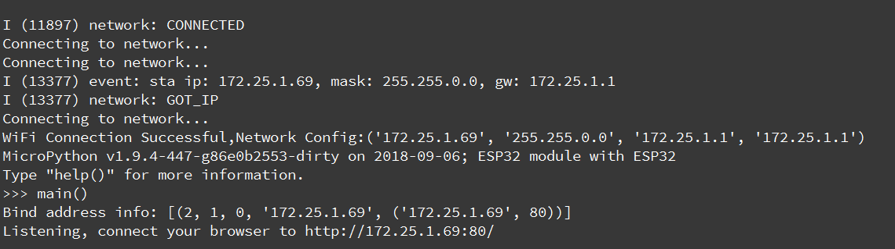
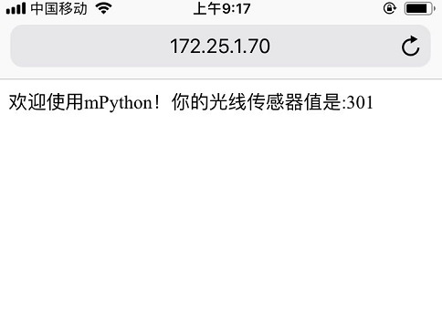

HTTP
HTTP是基于客户端/服务端（C/S）的架构模型，通过一个可靠的链接来交换信息，是一个无状态的请求/响应协议。
一个HTTP”客户端”是一个应用程序（Web浏览器或其他任何客户端），通过连接到服务器达到向服务器发送一个或多个HTTP的请求的目的。
HTTP GET request
以下示例显示了如何下载网页。HTTP使用端口80，您首先需要发送“GET”请求才能下载任何内容。作为请求的一部分，您需要指定要检索的页面。
socket实现HTTP get方法:
1import socket
2
3# 定义http get函数
4def http_get(url):
5 # 解析url
6 _, _, host, path = url.split('/', 3)
7 # 将网站的域名解析成IP地址
8 addr = socket.getaddrinfo(host, 80)[0][-1]
9 # 构建socket
10 s = socket.socket()
11 # 连接IP地址
12 s.connect(addr)
13 # 以http get 请求格式发送
14 s.send(bytes('GET /%s HTTP/1.0\r\nHost: %s\r\n\r\n' % (path, host), 'utf8'))
15 while True:
16 # socket接收
17 data = s.recv(100)
18 if data:
19 print(str(data, 'utf8'), end='')
20 else:
21 break
22 s.close()
23
24# 访问 http://micropython.org/ks/test.html
25http_get('http://micropython.org/ks/test.html')
提示
在使用socket模块时，请先连接wifi，并且确保可以访问互联网。有关如何wifi连接，请查看上章节 配置wifi 。
http_get('http://micropython.org/ks/test.html') ,掌控板客户端向 micropython.org 服务端发送范围test路径资源的get请求。服务端收到请求后将返回数据给客户端。
urequest 模块
上面是使用socket来实现http的get请求。我们可以使用 urequests 模块,里面已封装HTTP协议一些常用的请求方式,使用更为简便。
使用urequest模块,访问网页
1import urequests
2from mpython import *
3
4my_wifi = wifi()
5my_wifi.connectWiFi('ssid','psw')
6
7# http get方法
8r = urequests.get('http://micropython.org/ks/test.html')
9# 响应的内容
10r.content
有关更多的 urequests 模块使用,请查阅该模块说明。
HTTP Server
以下示例，掌控板作为HTTP服务端，使用浏览器可以访问板载光线传感器:
1import socket
2import network,time
3from mpython import *
4
5# 实例化wifi类
6mywifi=wifi()
7# WiFi连接，设置ssid 和password
8mywifi.connectWiFi("ssid","psw")
9
10
11def main():
12 s = socket.socket()
13 ai = socket.getaddrinfo(mywifi.sta.ifconfig()[0], 80)
14 print("Bind address info:", ai)
15 addr = ai[0][-1]
16 s.setsockopt(socket.SOL_SOCKET, socket.SO_REUSEADDR, 1)
17 s.bind(addr)
18 s.listen(5)
19 print("Listening, connect your browser to http://%s:80/" %addr[0])
20 # oled显示掌控板ip地址
21 oled.DispChar('Connect your browser',0,0,)
22 oled.DispChar('http://%s' %addr[0],0,16)
23 oled.show()
24
25 while True:
26 res = s.accept()
27 client_s = res[0]
28 client_addr = res[1]
29 print("Client address:", client_addr)
30 print("Client socket:", client_s)
31 req = client_s.recv(4096)
32 print("Request:")
33 print(req)
34 # 状态行
35 client_s.send(b'HTTP/1.0 200 OK\r\n')
36 # 响应类型
37 client_s.send(b'Content-Type: text/html; charset=utf-8\r\n')
38 # CRLF 回车换行
39 client_s.send(b'\r\n')
40 # 响应内容
41 content = '欢迎使用掌控板mPython！你的光线传感器值是:%d' % light.read()
42 client_s.send(content)
43 # 关闭socket
44 client_s.close()
在REPL中运行main:
>>> main()

手机或笔记本电脑连接相同wifi，使其在同个局域网内。按打印提示或oled屏幕显示ip，使用浏览器访问掌控板主机IP地址。
